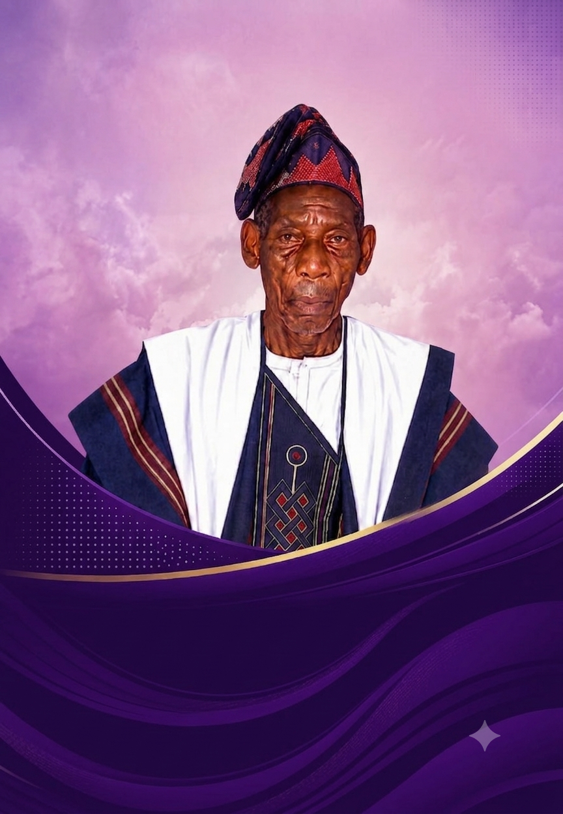

In Portraits
Baba, As We Knew Him

Carpenter. Churchman. Father to more than his own. Ninety-three years lived in Ido-Ekiti and Ibadan, closed in the fear of God he taught to five generations.

Baba was born in Enurin Compound, Ido-Ekiti — the only one of nine children to survive to adulthood. He never had a formal education, but he taught himself to read and write, bought the evening paper daily to sharpen his letters, and to his last week could still recall dates from eighty years past. What he built with his hands across Ibadan, Lagos and beyond, he built just as carefully at home — raising his children alone from 2004, and reminding every one of them that a good name outlasts silver and gold.
The Entire Family of Enurin of Odo-Agbe Quarters, Ido-Ekiti, cordially requests the honour of your presence.
The complete bilingual programme — Yoruba and English — with hymns, the order of service, and tributes from the family.
Download the Programme"Not unto us, O Lord, not unto us, but to Thy name we give glory, for Thy mercy, and for Thy truth's sake." Psalm 115:1
The family gives profound gratitude to God Almighty, the Church of God, relatives, friends and all well-wishers. Your prayers, gifts, support and presence mean more than words can hold.
Ọdun a jina si wọn lọruko Jesu, Amin.